New experimental paradigms and tools for consumer research
ACR 2026, Chicago, 26 September 2026
- Simon J. BlanchardGeorgetown University
- Johannes BoegershausenErasmus University Rotterdam
- Aaron GarveyUniversity of Tennessee
- Kelly L. HawsVanderbilt University
- Holly HoweUniversity of British Columbia
- Moritz JoerlingEM Lyon Business School
- John G. Lynch, Jr.University of Colorado Boulder
- Ilya MorozovNorthwestern University
- Maxwell PooleErasmus University Rotterdam
- Hauke RoggenkampETH Zurich
- Oleg UrminskyUniversity of Chicago
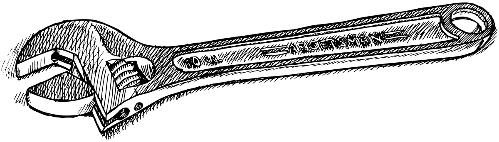
This presentation is based on a slide deck that we provide on Zenodo, together with the original session proposal for ACR 2026.
doi.org/10.5281/zenodo.23154344Agenda
Setting the stage: some examples and reflections
- Open Science Online Grocery
- DICE: Digital In-Context Experiments
- TestTube
- Online Bookstore
- Lessons from a decade of building apps
Open discussion with panel and audience
Topics may explore:
- Reviewing & validating
- Validity profiles
- Agentic coding
- Toothbrush problems
- …
Open Science Online Grocery
Demonstration: User Side
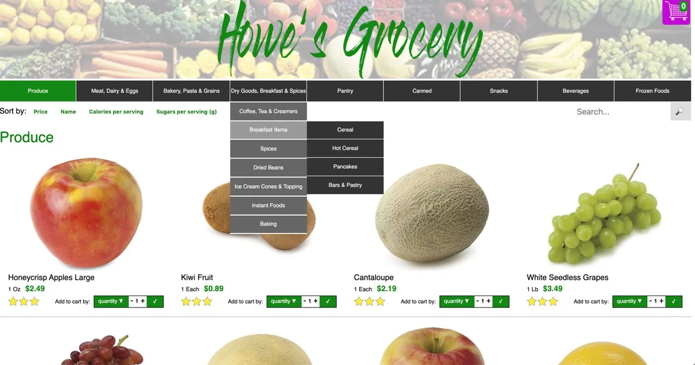
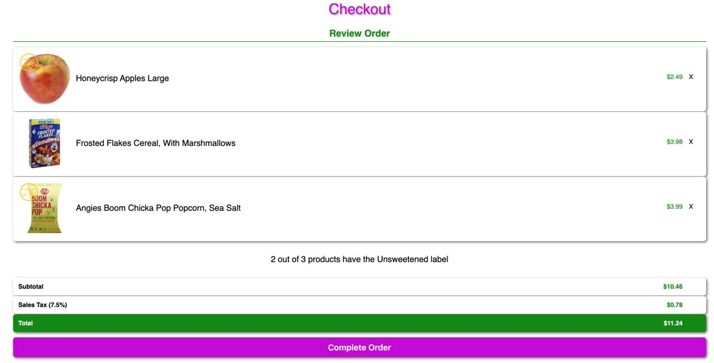
~11,000 products; US market
Demonstration: Researcher Side
What can be manipulated?
- Add labels to food
- Sort products within a page
- Create custom categories (e.g. SNAP eligible, vegan)
- Create custom prices and discounts and assign participants a budget
- Give cart-level feedback
- Modify the formatting of the nutrition facts label
- Recommend products based on what’s added to cart
- Give participants multiple budgets (e.g., gift card or SNAP benefits)
What can be measured?
- Products added to the cart
- Category of each product
- Nutritional value of each product
- Price of each product
- Total amount spent
- Items viewed, but not added to cart
- Items removed from cart
- Purchasing behavior over multiple trials
Two tech stacks for running OSOG
Using the hosted website
(openscience-onlinegrocery.com/)Pros
- Easy set up (just need Qualtrics and participants)
Cons
- Generally, limited to existing functionalities
- $75 annual fee
- Limited hours of operation
DIY Hosting
(https://github.com/Open-Science-Online-Grocery/online-grocery)Pros
- Highly customizable
Cons
- Must pay hosting fees yourself (~$250/mo)
- Requires significant coding knowledge
Comparison to Existing Options
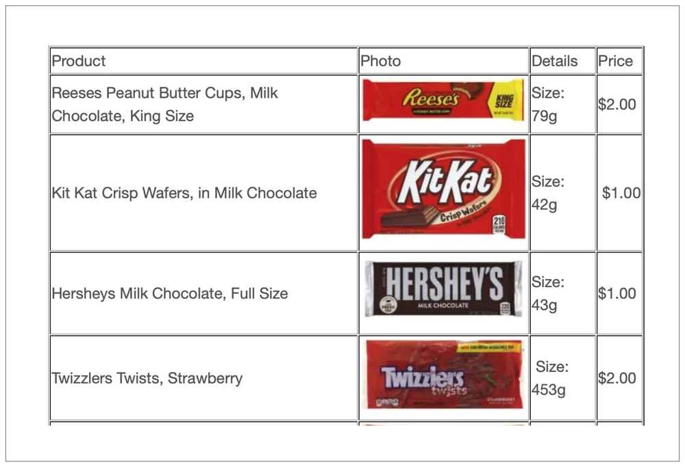
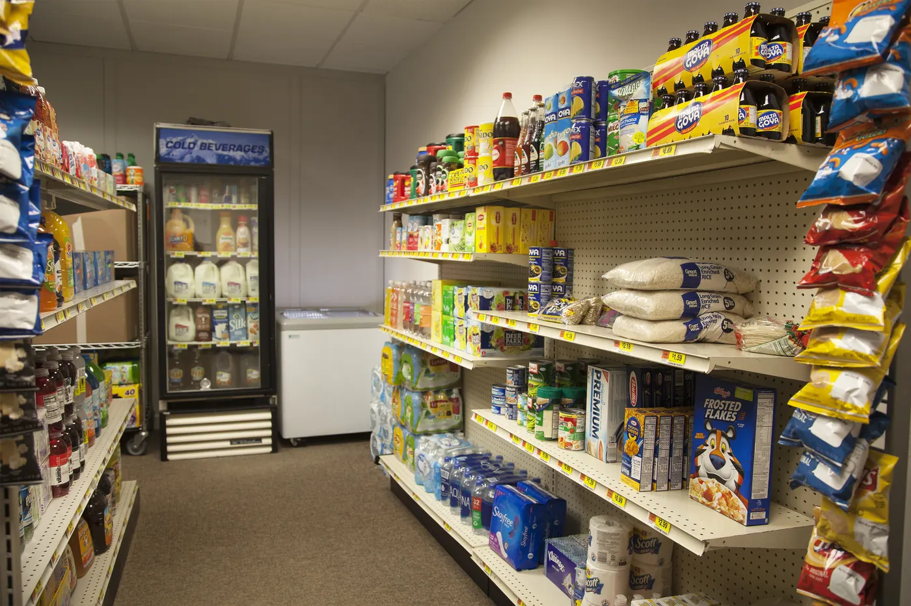
| Qualtrics Studies | Field/Lab data | |
|---|---|---|
| The size of the focal effect | ?? | The effect size of an intervention (labelling, shelf position) is equal across field data and simulations. |
| Money spent | People spend more in survey studies than in simulations. | People spend equal amounts in simulations as they do in mock stores. |
| Relationship between intent and behavior | Intent is a stronger predictor of behavior in simulations vs. surveys | Intent is an equally good predictor of behavior in simulations vs. mock stores. |
| Test-retest reliability | Test-retest reliability is stronger for surveys than simulations, but simulations reach acceptable TRR | ?? |
(Reppman, Howe, Krentz, Edinger-Schons & Foege, in prep)
DICE
Advancing Social Media Research through Digital In-Context Experiments
ACR 2026 | 26 September 2026
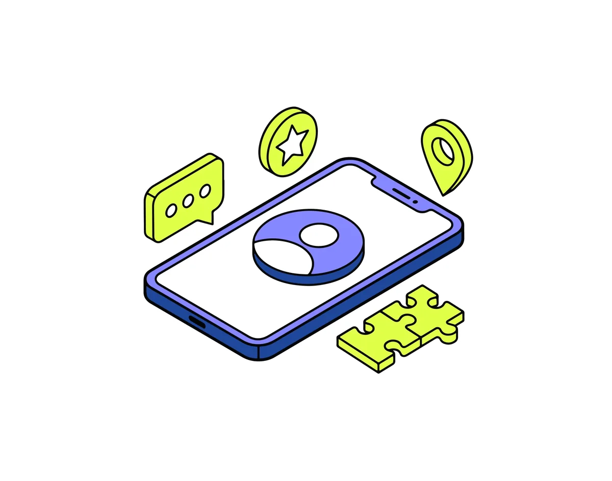
Study Paradigms in Social Media Research
Vignette Experiments
Researchers recruit study participants and manipulate key variables within structured scenarios to elicit individual responses and study decision-making or perceptions.
Platform Studies
Researchers use online platforms to expose social media users to ads that vary in copy and creative, measuring their natural reactions to these manipulations on an aggregated level.
Observational Studies
Researchers collect and analyze existing data from social media users' natural behavior on platforms, without intervention (i.e., without manipulating variables or creating artificial scenarios).
- Braun & Schwartz (2025)
- Gordon, Moakler & Zettelmeyer (2023)
- Boegershausen et al. (2022)
- Xu, Zhang & Zhou (2020)
Introducing DICE
Create social media feeds and measure how participants interact with them.
- More realistic stimuli*
- Control over & manipulation over feed composition & sequence
- Granular behavioral measures, e.g., as a proxy for (in)attention
See also dice-app.org
Tech Stack: Designed for Others
- Building the tool for others required accessibility considerations.
- Accessibility considerations required simple and ubiquitous frameworks.
- Those frameworks cost me some flexibility.
- But those frameworks also tend to work very well with vibe coding nowadays.
DICE App
TestTube
Short-form video feeds built for research
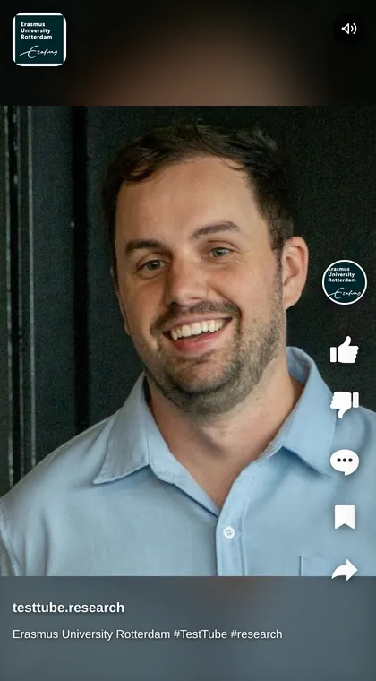
Poolepoole@rsm.nl
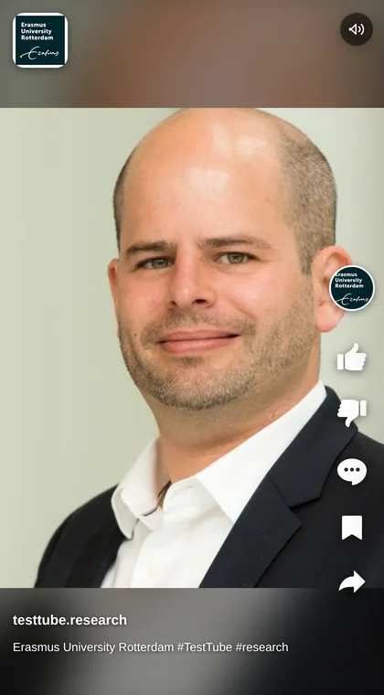
Boegershausen
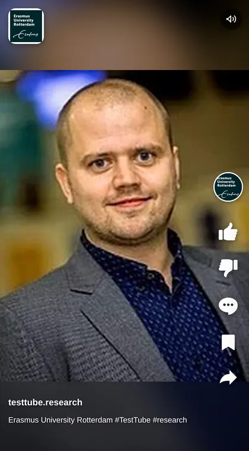
Van den Bergh
Why did we build it?
What they show us
public counts via the API
- 1.12Mviews
- 89.1Klikes
- 1.40Kcomments
- 17.1Ksaves
- 28.7Kshares
What they hide
the behaviour they optimize on
example numbers from a TestTube study of 204 sessions
The feed, the features, the measures
The Feed
Real, popular videos in a feed that looks and feels like the real thing, on phone or desktop.
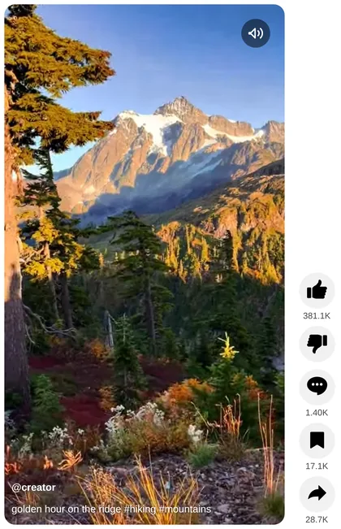
The Features
Every design feature is a switch we set per condition.
- Autoplay
- Play delay
- Choice slides
- Ads
- Skip-or-play
- Session cap
The Measures
Every swipe, tap and second of playback is time-stamped and logged in a csv.
14:02:07.1 play_start autoplay 14:02:09.4 button_click Like video 14:02:11.0 video_switch swipe 14:02:11.5 play_start autoplay 14:02:14.2 comments_open 14:02:19.9 comments_close 14:02:23.3 video_natural_end 15.9 s 14:02:24.1 video_switch button
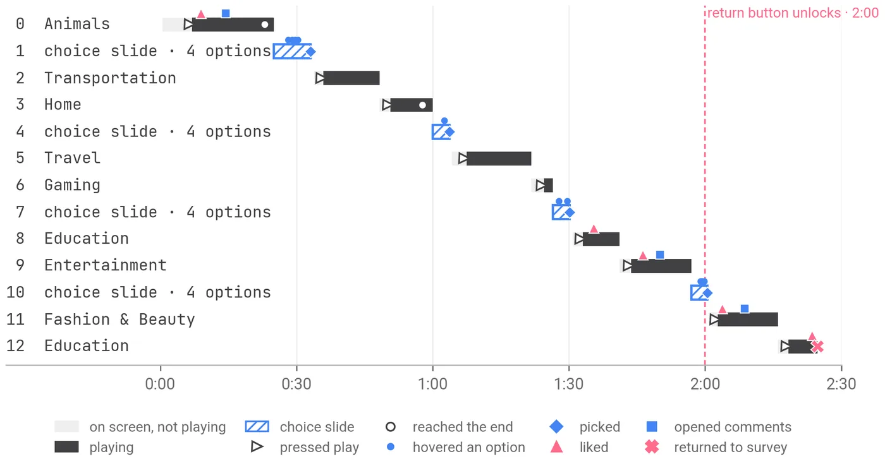
How TestTube works
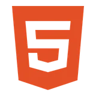
The websiteHTML / JS front end
Flask back end
manipulations are URL parameters
?cell=cp50&ads=1&pd=500
The feed builder
crawls 1,300+ hashtags
GitHub
website code + feed CSVs
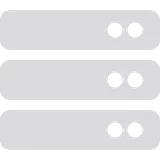
Linux VMhosts the website
writes the interaction log in real time, one CSV per session
2026-09-17_14-02-07_R_10Panwmw5xYvclT.csv
start time + Qualtrics Response ID
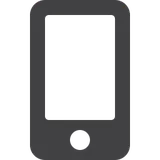
Participantopens the link; the feed renders in the browser
every swipe and tap is sent back as it happens
videos stream from cloud storage straight to the browser
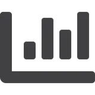
Analysislogs matched to the survey by Response ID
Bookstore
Simulated Store Methodology
Simulated Online Bookstore
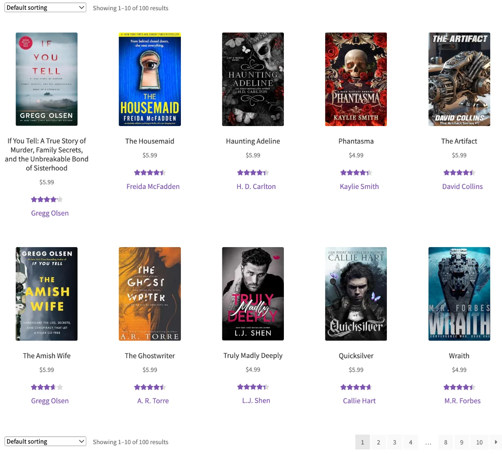
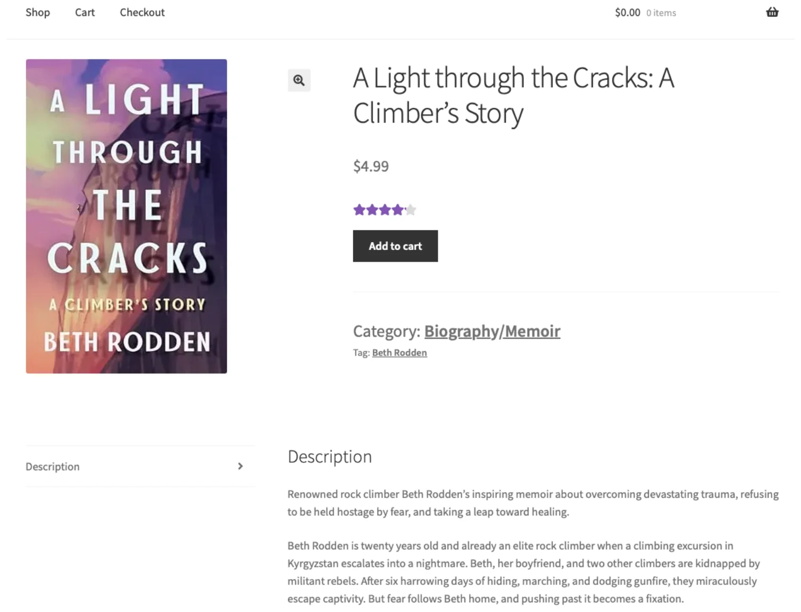
Simulated Store Methodology: Advantages
- Experimental control
- Unpack mechanisms driving the main effects
- Run treatments that industry collaborators would not want to run
- Detailed behavioral data
- Collect more granular data than is usually available (scrolling, clicks, queries, etc.)
- Higher external validity in the lab
- Realistic choice environment with real incentives
Simulated Store Methodology: Drawbacks
Difficult to set-up- No longer true in 2026 thanks to agentic coding
- Creating incentives is expensive
- Need to give subjects a budget to incentivize their choices
- Lower external validity than field studies
- Always get the criticism “. . . but this is a fake store!”
Follow-Up Study: AI-Assisted Search
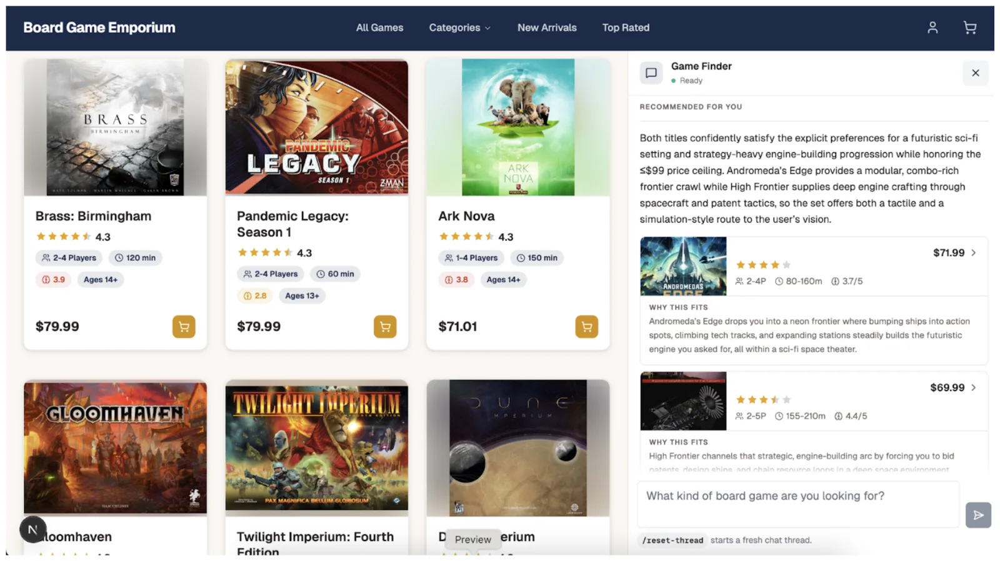
Resources
| Open Science Online Grocery | DICE | TestTube | Simulated Online Bookstore | |
|---|---|---|---|---|
| Contact | Holly Howeholly.howe@sauder.ubc.ca | Hauke Roggenkamphauke.roggenkamp@mtec.ethz.ch | Maxwell Poolepoole@rsm.nl | Ilya Morozovilya.morozov@kellogg.northwestern.edu |
| Publication | Howe et al. (2022)Journal of the Association for Consumer Research | Roggenkamp et al. (2025)Journal of Marketing | Work in progress | Morozov & Tuchman (2024)Marketing Science |
| Tool website | openscience-onlinegrocery.com | dice-app.org | – | – |
| Code | GitHub repository | GitHub repository | – | Supplemental materials Data & replication code |
Resources II
-
Farronato, C., & Fradkin, A. (2026)
Webmunk 2: A Tool for Studying Online Behavior and Digital Platforms
White paper
-
Joerling, M. (2026)
Integrating GenAI interactions in marketing studies: A methodological guide
International Journal of Research in Marketing, 43, 28–47
-
Garvey, A. G., & Blanchard, S. J. (2025)
Generative AI as a Research Confederate: The LUCID Methodological Framework and Toolkit for Controlled Human-AI Interactions in Survey Research
Working paper, SSRN
-
Pikal, K., Villarroel Ordenes, F., Herhausen, D., & Tamagnini, P. (2026)
From Insight to Impact: Closing the Marketing Science Value Chain with Interactive, Research-Driven Apps
Journal of Interactive Marketing, 61(3), 241–256
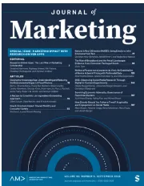
Special issue
Marketing Impact with Research-Driven Apps
Journal of Marketing, Vol. 90, Issue 5, September 2026